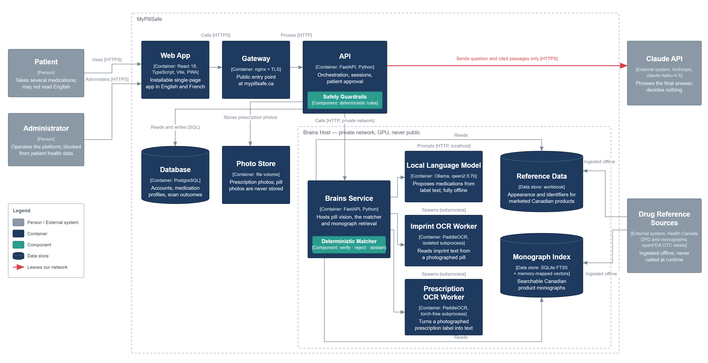

The Wrong Pill Should Never Go Unnoticed
It reads your prescription, checks your pill from a photo, and answers your questions in your language. When it isn’t sure, it says so.
Capstone MVP · Decision-Support Only
Graduate Program in AI & Machine Learning
Capstone Project · 2026
Capstone Project · 2026

mypillsafe.ca
What It Does
- Photograph a prescription — it becomes your medication list, and you approve every line.
- Photograph a pill — it checks it against the medicines you already approved. It cannot tell you whether it is safe to take now.
- Ask a question — it answers from official Canadian and manufacturer drug information, in your language.
- It reminds you, out loud, when a dose is due.
Why It Matters
- Once a pill leaves its bottle it is hard to tell apart — so many tablets are small, white and round.
- Older Canadians often take several medications at once, and the risk of a harmful mix climbs with each one added.
- The people who read English least well get the least help with exactly this question.
The Capture Card


Pocket-sized, and printed on a desktop 3-D
printer. The colour patches and corner markers let the app correct for whatever light you
happen to be standing in, so a pill looks the same in every kitchen. Research prototype —
the design is still being refined.
Where It Helps
- The weekly organizer — check a loose tablet against your own list.
- A new prescription — photograph it, approve it, and reminders begin.
- A language barrier — read a real, sourced answer in your own language.
- Living alone — spoken reminders before each dose and again at dose time.
System Architecture

Every path passes through fixed safety rules and your own approval
before anything is saved.
User Workflow
The part that talks is never the part that decides.
1 · Prescription → your list
Label photo
→
Prescription Reader
→
Safety rulesno invented times
→
YOU approvenothing saved on its own
→
Your medication list
2 · Pill photo → answer
Pill on the card
→
Pill Visioncolour · shape · imprint
→
Matching rulesa fixed formula, not a model
→
Only your own medications
✓ On your list
? Not sure — don’t take it, ask your pharmacist
✗ Doesn’t match — stop
Whichever answer you get, confirm with your pharmacist before you
take anything. MyPillSafe checks your list — your pharmacist checks your care.
3 · Question → sourced answer
Your question
→
Find the right pageone medication only
→
Answer Voiceputs it in words, decides nothing
→
Checked against the source
→
Answer in your language
The App

Live at mypillsafe.ca — installs on a phone with no app store.
How We Evaluate
- Every experiment has its pass-or-fail mark written down before the run, so a disappointing result cannot quietly become a good one.
- We treat one failure as worse than all the others — calling a wrong pill correct — and we measure it again every time anything changes.
- Saying “I’m not sure” counts as a success, not a miss. The system is built to abstain rather than guess.
- Results are checked against photographs of the real medicines, not only against catalogue images.
A larger confirmatory study is planned once the pipeline is frozen, so the
design can be tested on photographs it has never seen.
The result we didn’t expect. Pill Vision does three jobs: find
the pill, read its shape and colour, and read the imprint stamped on it. On two of them, models
we never trained are doing better than the ones we trained ourselves. That negative result
reshaped the design, and it is what our paper is about.
Privacy & Access
- The app is in English and French; answers come back in the language you choose.
- Spoken help and spoken reminders. Installs on a phone with no app store.
- Only monograph text and your question are ever sent to the AI service — never your name, date of birth or medication list.
- The pill photo itself is never kept — only the outcome.
The Team

Muthuraj Jayakumar
Project Lead · ML Architecture

LinkedIn

Sumanth Reddy
Backend & Systems Integration

LinkedIn

Lohith Reddy
Frontend & User Experience

LinkedIn

Ali Ozdemir
Data Engineering · Reference Pipeline

LinkedIn

Abdallah Mohamed
Quality Assurance & Evaluation

LinkedIn
Grounded in published pill-imaging research — ePillID and GO-PILL.
Future Work
- An imprint validator — a person checks the machine’s reading of colour, shape and imprint against the official document.
- Ask Health Canada to require an imprint on every tablet, as the US FDA already does. An unmarked pill cannot be identified.
- Ask GS1 to require manufacturers to publish colour, shape, size and imprint — better identification, harder counterfeiting.
Decision-support only. Not a medical device — always confirm with a licensed pharmacist or physician.
Interface in EN · FR — answers in the language you choose
Live at mypillsafe.ca